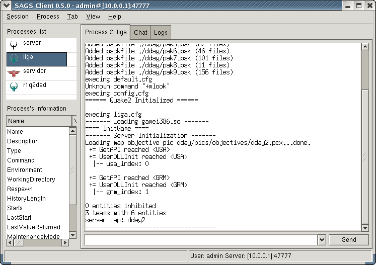

SAGS or Secure Administrator of Game
Servers is an Open Source project who has the ¿finality? to
produce a solution to manage game servers under
GNU/Linux.
The project ¿consist? in a client-server application which uses a SSL connection to transfer game information and necessary commands to manage it.
It has been released under the terms of the GNU General Public License.
The website's project is hosted at Sourceforge.net and the URL is http://sags.sourceforge.net/.
Vaya a la sitio web del proyecto (indicado más arriba) y entre en
la
sección "Downloads". En el
final de la página encontrará el título "Precompilated binaries" junto con
un enlace al instalador (para win32) o a paquetes RPM. La descarga se
realiza usando
el sistema
normal de descargas de Sourceforge.net
por lo que probablemente tendrá que escoger un mirror antes de
comenzar a descargarlo.
El código fuente tanto del cliente como del servidor se pueden obtener directamente de la sección "Downloads" o desde la lista de archivos del proyecto en Sourceforge.net: http://sourceforge.net/project/showfiles.php?group_id=106892.
En la imagen siguiente se muestra la ventana principal. Contiene
tres elementos principales que son la Lista
de procesos, el panel de Información
del proceso y varias pestañas que muestran las consolas de los
procesos, el canal de chat e información del programa.
Lo primero que debe hacer es conectarse al servidor remoto usando el nombre de usuario y la contraseña asignadas a Ud. por el administrador. Para ingresar los datos vaya al menú Sesión / Conectar.... A continuación aparecerá una ventana como la siguiente.
Ingrese los datos del servidor de la forma <dirección IP>:<puerto>
y luego su nombre de usuario y la contraseña. En la versión para
Linux
se pueden usar direcciones IPv6 encerradas entre corchetes de la forma [<dirección
IPv6>]:<puerto>, sólo si el sistema
operativo soporta el nuevo protocolo.
Si se está conectando a un servidor en el puerto 47777, no es necesario agregar este
valor y sólo basta con ingresar la dirección IP.
Durante la sesión la ventana principal puede parecerse a la
siguiente que muestra varios servidores de Quake II con D-Day: Normandy
en la Lista de procesos.

Seleccionando un nombre de la Lista
de procesos se mostrará la consola de ese proceso y la
información de él aparecerá en el panel de Información del proceso. Sólo los
procesos autorizados para el usuario serán mostrados por el cliente.
Para enviar un comando al servidor del juego seleccionado, sólo
escríbalo en la
entrada de abajo y luego pulse el botón Enviar o simplemente presione la
tecla Enter. Los comandos ingresados son enviados al servidor y pasados
directamente al proceso del juego. En la consola queda destacado el
comando enviado al servidor y la salida es mostrada en
la consola unos instantes después. El comando enviado es guardado en el
menú desplegable de esa entrada para que pueda ser usado posteriormente.
Se puede cambiar la fuente de la consola escogiendo Ver
/ Preferencias...
en el menú y luego presionando el botón correspondiente a Fuente de las consolas.
Para guardar los mensajes de la consola actual a un archivo hay que
seleccionar Proceso / Guardar en
archivo... en el menú.
En la pestaña Registros se
pueden ver las distintas acciones que realiza el cliente y se muestran
los nombres de algunos de los paquetes enviados por el servidor. Se
pueden guardar los registros en un archivo de texto seleccionando Pestaña
/ Guardar registros
en archivo... en el menú. Se
puede ocultar esta pestaña escogiendo Ver
/ Mostrar registros
en el menú. Este estado será recordado por el programa.
La pestaña Conversación
muestra a todos los usuarios conectados al servidor y permite que se
puedan comunicar entre ellos. Los usuarios administradores son
indicados con una ampolletita verde.
Los mensajes son enviados al resto de los clientes con sólo
escribirlo en la entrada inferior y presionando Enter o haciendo clic
en el botón Enviar. También
están disponibles los siguientes comandos para enviar otros tipos de
mensaje:
Se puede cambiar la fuente del canal escogiendo Ver
/ Preferencias...
en el menú y luego presionando el botón correspondiente a Fuente del canal de chat.
Para guardar los mensajes del canal de chat se escoge Pestaña
/ Guardar conversación
en archivo... del menú.
To get disconnected, select Session / Disconnect in the menu or just close the application from its title bar's icon.